Visual Studio Code 中的配置文件
Visual Studio Code 拥有数百项设置、数以千计的扩展以及无数种调整 UI 布局以自定义编辑器的方式。VS Code 配置文件（Profiles）允许你创建自定义设置集，并快速切换或与他人分享。本主题介绍如何使用配置文件编辑器创建、修改、导出和导入配置文件。
访问配置文件编辑器
配置文件编辑器使你能够在 VS Code 中从一个统一的位置创建和管理配置文件。默认情况下，配置文件编辑器会在编辑器区域上方以模态覆盖层的形式打开。
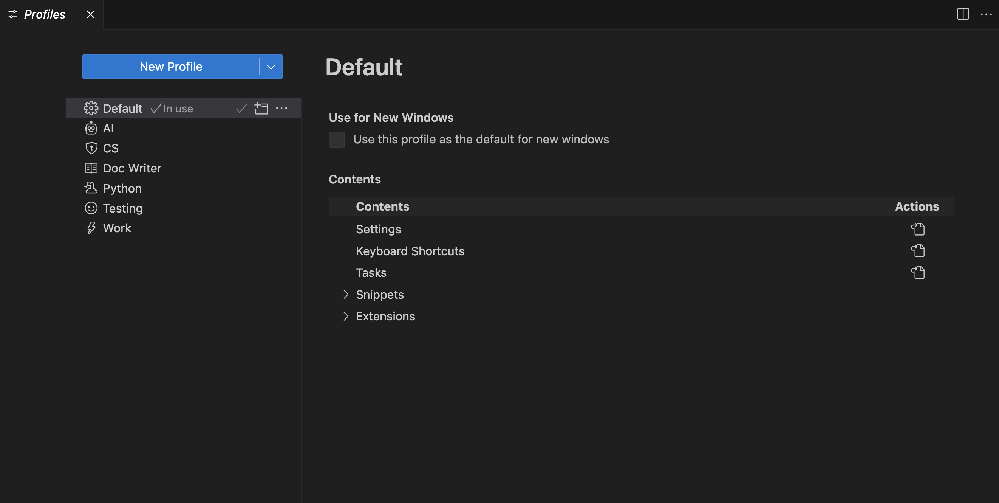
你可以通过以下任一方式访问配置文件编辑器：
- 通过文件 > 首选项 > 配置文件菜单项
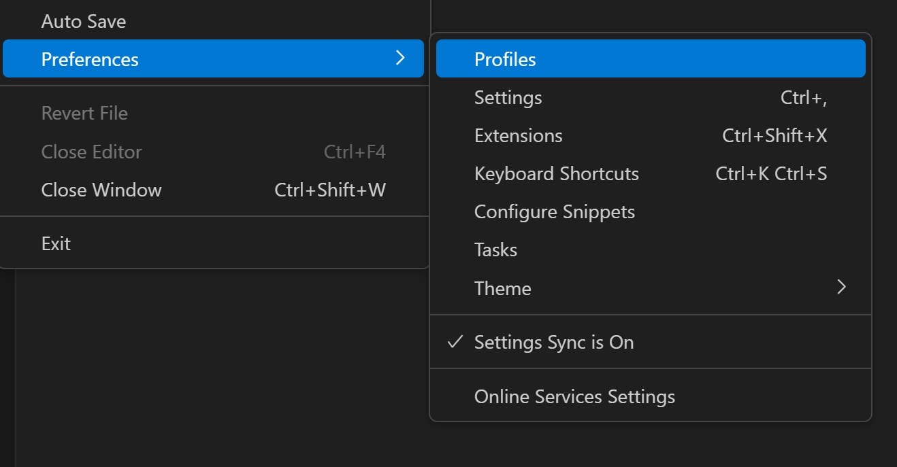
- 通过活动栏底部的管理齿轮按钮。
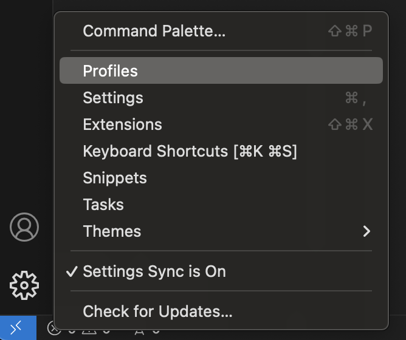
创建配置文件
VS Code 将你当前的配置视为默认配置文件。当你修改设置、安装扩展或通过移动视图来更改 UI 布局时，这些自定义设置都会被记录在默认配置文件中。
若要创建新的配置文件，请打开配置文件编辑器并选择新建配置文件按钮。这将打开新建配置文件表单，你可以在其中输入配置文件名称、选择图标并配置新配置文件中包含的内容。
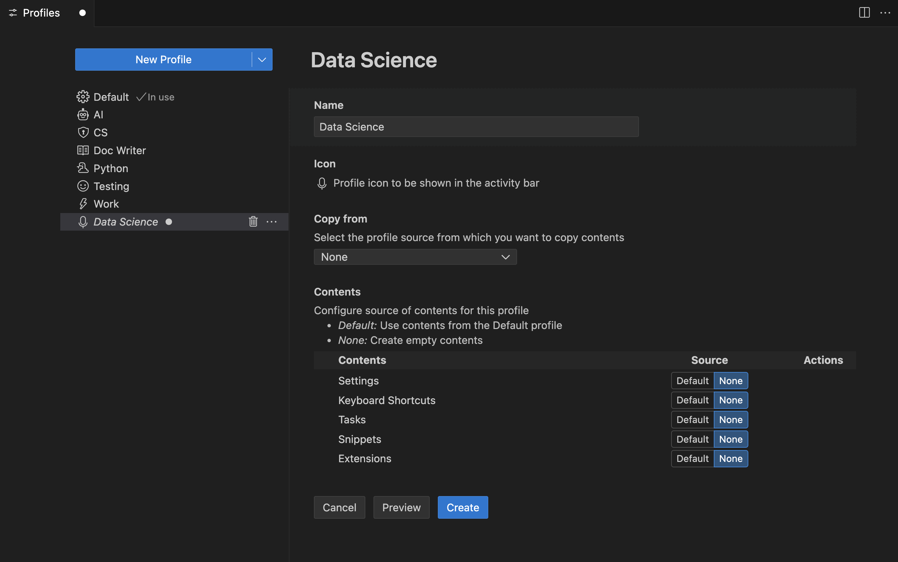
你可以选择通过复制配置文件模板或现有配置文件的内容来创建新的配置文件，也可以创建空白配置文件。空白配置文件不包含任何用户自定义设置，如设置、扩展、代码片段等。
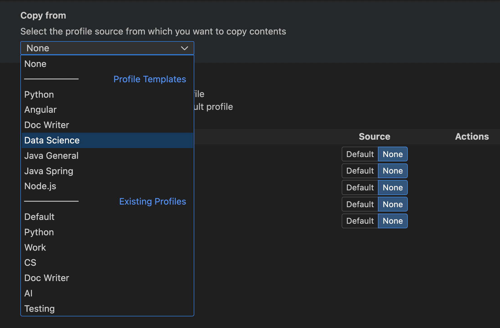
你可以将新配置文件限制为仅包含配置的子集（设置、键盘快捷键、MCP 服务器、代码片段、任务和扩展），其余配置则使用默认配置文件中的配置。例如，你可以创建一个包含所有配置但排除键盘快捷键的配置文件，当此配置文件处于活动状态时，VS Code 将应用默认配置文件中的键盘快捷键。
你可以在内容部分浏览所复制的模板或配置文件的内容。每个部分旁边都有一个打开按钮，你可以选择该按钮查看其内容。
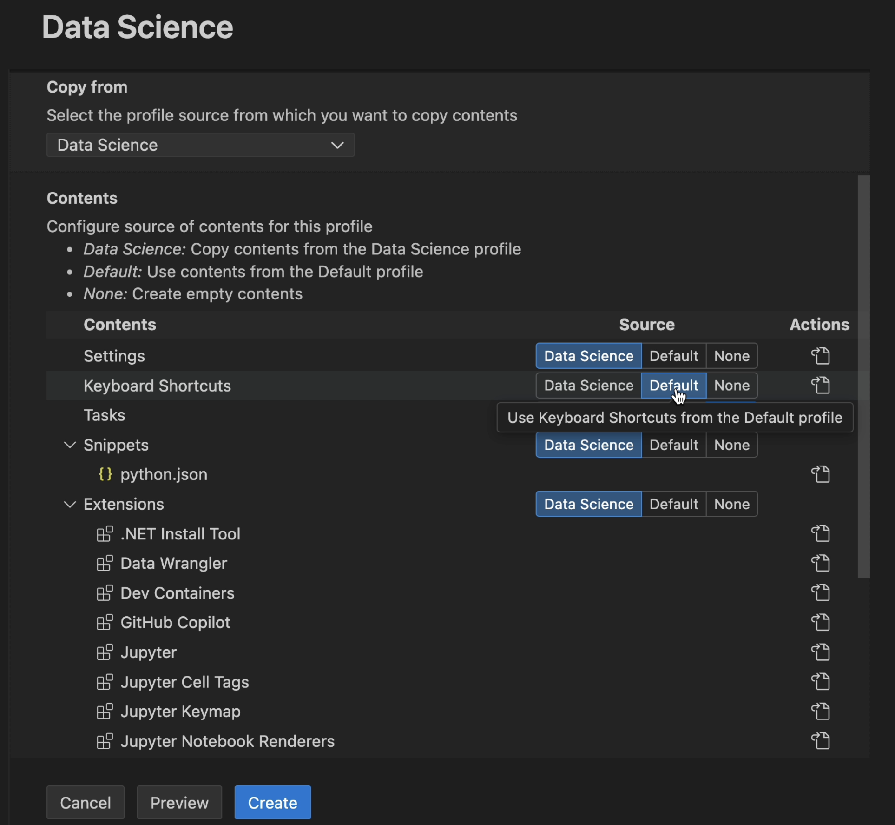
在创建新配置文件之前，可以选择预览按钮进行预览。这将打开一个新的 VS Code 窗口，并应用该新配置文件。当你对预览满意后，可以选择创建按钮来创建新的配置文件。
检查当前配置文件
你可以在 VS Code 用户界面的以下几个位置找到 VS Code 窗口当前正在使用的配置文件：
- 在 VS Code 标题栏中
- 在活动栏中悬停在管理按钮上时显示的悬停文本中
如果你为配置文件配置了图标，该图标将用作活动栏中的管理按钮。请注意，在以下截图中，管理按钮现在显示一个麦克风图标，这表示有一个配置文件正在活动状态。
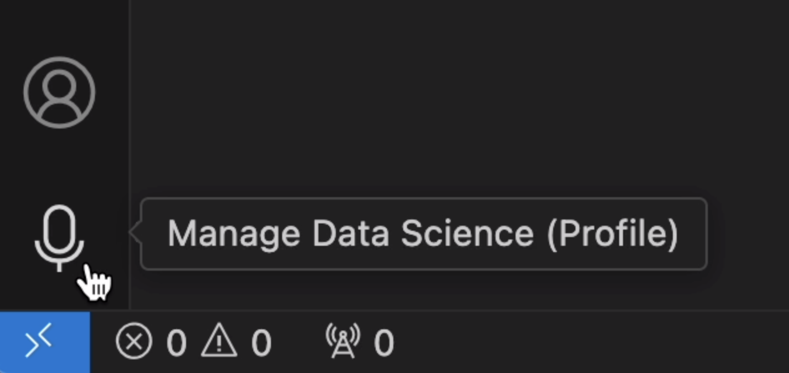
如果你没有配置图标，则管理齿轮按钮会显示一个徽章，其中包含活动配置文件的前两个字母，以便你快速检查正在运行哪个配置文件。
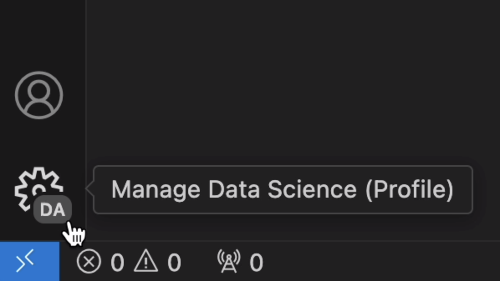
- 在配置文件编辑器中
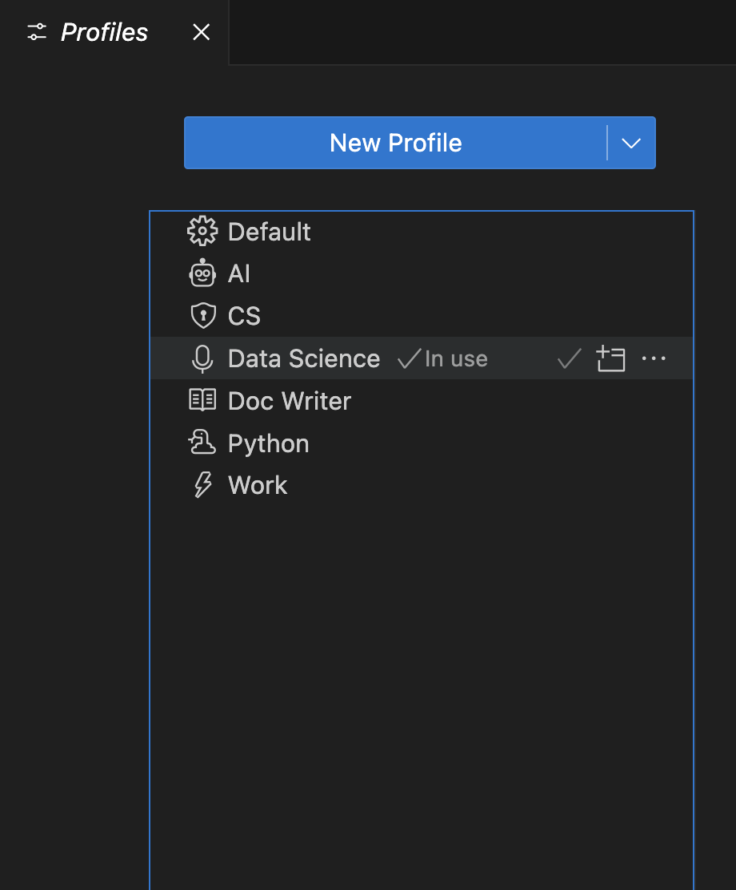
注意：如果你正在使用默认配置文件，则不会显示配置文件名称。
配置配置文件
你可以像更改任何 VS Code 配置一样来配置一个配置文件。你可以安装/卸载/禁用扩展、更改设置以及调整编辑器的 UI 布局（例如，移动和隐藏视图）。当你应用这些更改时，它们会被存储在你当前活动的配置文件中。
文件夹和工作区关联
当你创建或选择一个配置文件时，它会与当前文件夹或工作区关联。每当你打开该文件夹时，该工作区的配置文件就会变为活动状态。如果你打开另一个文件夹，配置文件会切换到另一个文件夹的配置文件（如果该文件夹已设置过配置文件）。
你可以在配置文件编辑器的文件夹和工作区部分查看与配置文件关联的文件夹列表。
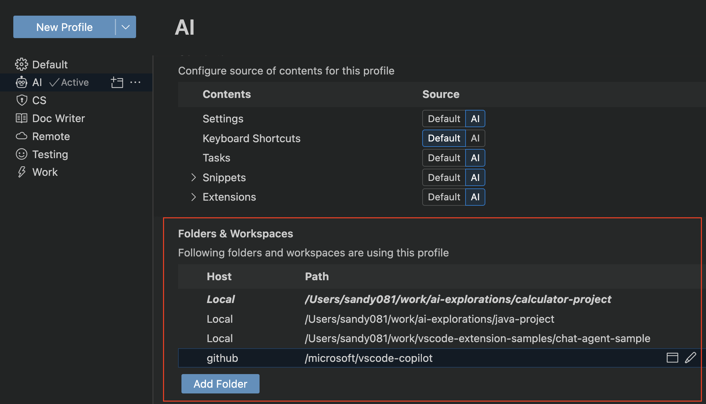
管理配置文件
切换配置文件
你可以通过命令面板中的配置文件: 切换配置文件命令快速切换配置文件，该命令会显示一个包含可用配置文件的下拉列表。
你还可以在配置文件编辑器中，通过选择要切换到的配置文件旁边的为当前窗口使用此配置文件按钮来切换配置文件。
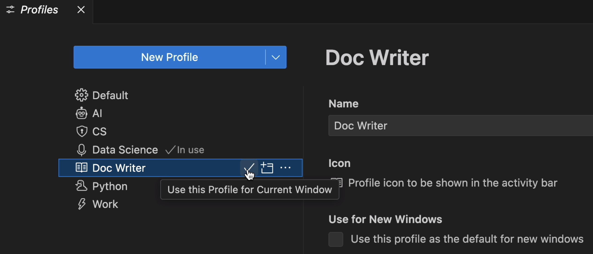
编辑配置文件
你可以在配置文件编辑器中编辑现有配置文件的名称、图标和其他配置。
删除配置文件
你可以在配置文件编辑器中，通过选择要删除的配置文件的溢出操作中的删除配置文件按钮来删除配置文件。
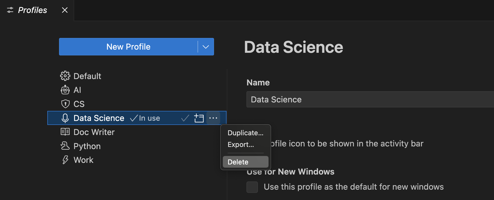
你还可以通过删除配置文件命令来删除配置文件。删除配置文件下拉列表允许你选择要删除的配置文件。
使用配置文件打开新窗口
你可以在打开新的 VS Code 窗口时，通过配置文件编辑器中的配置文件内容视图提供的用于新窗口选项来选择要使用的配置文件。
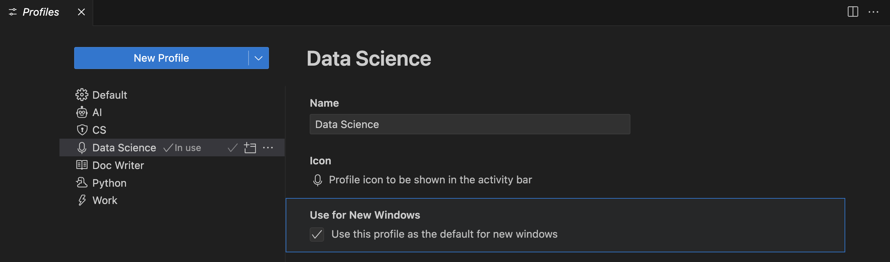
你还可以通过文件 > 使用配置文件新建窗口菜单直接为特定配置文件打开一个新的 VS Code 窗口，并选择要使用的配置文件。
将设置应用到所有配置文件
若要将某项设置应用到所有配置文件，请使用设置编辑器中的将设置应用到所有配置文件操作。
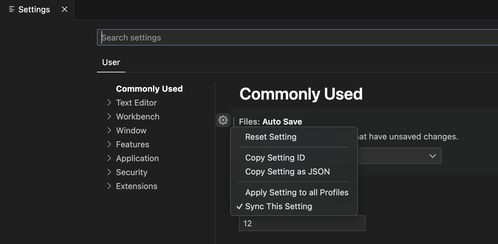
从任何配置文件中对这项设置所做的更新也会应用到所有其他配置文件。你可以随时通过取消选中将设置应用到所有配置文件操作来恢复此行为。
将扩展应用到所有配置文件
若要将某个扩展应用到所有配置文件，请在扩展视图中选择将扩展应用到所有配置文件操作。
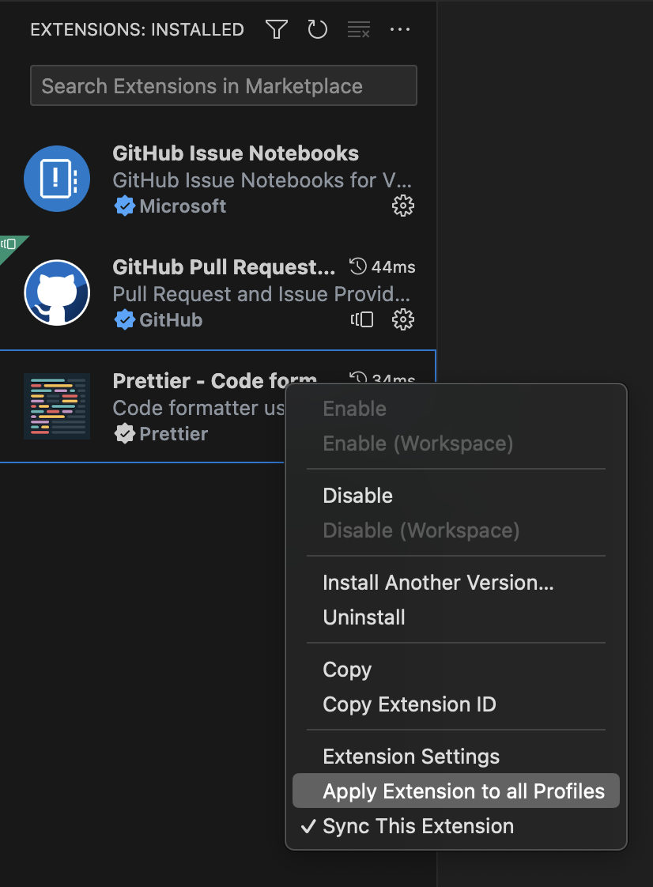
这使得此扩展在所有配置文件中都可用。你可以随时通过取消选中将扩展应用到所有配置文件操作来恢复此行为。
跨机器同步配置文件
你可以使用设置同步将你的配置文件迁移到不同的机器。启用设置同步并在设置同步: 配置下拉列表中勾选配置文件后，所有配置文件都可以在已同步的机器上使用。
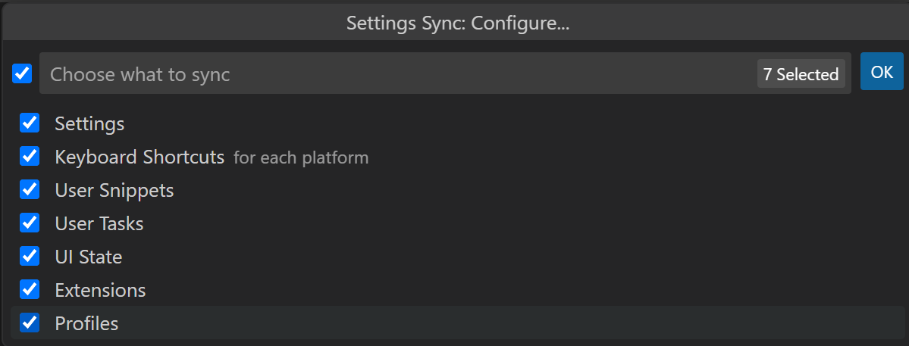
注意：VS Code 不会将扩展同步到或从远程窗口同步，例如当你连接到 SSH、开发容器（devcontainer）或 WSL 时。
分享配置文件
导出
你可以通过要导出的配置文件的溢出操作中的导出...按钮来导出配置文件，以便保存或与他人分享。
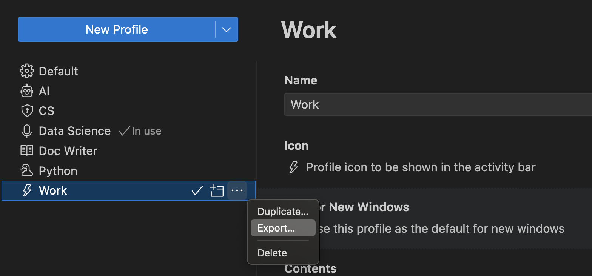
当你选择导出...时，系统会提示你输入配置文件名称，并选择是导出到 GitHub gist 还是导出到本地文件系统。
保存为 GitHub gist
将配置文件保存到 GitHub（系统会提示你登录 GitHub）后，会出现一个对话框，为你提供复制链接选项，以便与他人分享你的配置文件 gist URL。该 URL 包含一个自动生成的 GUID，格式为 https://vscode.dev/editor/profile/github/{GUID}。该 GitHub gist 被标记为秘密，因此只有拥有链接的人才能看到该 gist。
如果你启动该配置文件 URL，它将打开 VS Code for the Web，其中配置文件编辑器处于打开状态并显示导入的配置文件内容。你可以根据需要取消选择配置文件元素，并且如果你想在 VS Code for the Web 中继续使用该配置文件，则需要手动安装扩展（通过下载云按钮）。
你还可以选择在 Visual Studio Code 中导入配置文件，这将打开 VS Code Desktop 并显示配置文件内容以及一个导入配置文件按钮。
你可以在 https://gist.github.com/{username} 查看你的 gist。在 GitHub gist 页面上，你可以重命名、删除或复制 gist 的 GUID。
保存为本地文件
如果你选择将配置文件保存为本地文件，保存配置文件对话框将允许你将文件放置到本地机器上。配置文件以扩展名为 .code-profile 的文件形式保存。
导入
你可以在配置文件编辑器中，通过选择新建配置文件按钮下拉操作中的导入配置文件...按钮来导入现有配置文件。
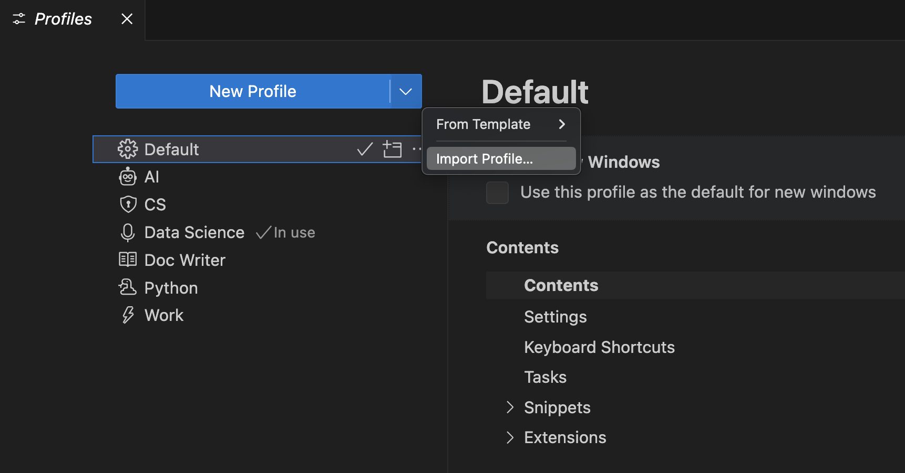
当你选择导入配置文件...时，系统会通过导入配置文件对话框提示你输入 GitHub gist 的 URL 或配置文件的文件位置。选择配置文件后，配置文件创建表单会打开，并预选了要导入的配置文件。你可以继续修改配置文件，然后选择创建来导入该配置文件。
配置文件的用途
配置文件是自定义 VS Code 以更好满足你需求的好方法。在本节中，我们将介绍配置文件的一些常见用例。
由于配置文件是按工作区记忆的，因此它们是为特定编程语言自定义 VS Code 的好方法。例如，你可以创建一个 JavaScript 前端配置文件，其中包含你在一个工作区中进行 JavaScript 开发时使用的扩展、设置和自定义设置，同时创建一个 Python 后端配置文件，其中包含你在另一个工作区中进行 Python 开发时使用的扩展、设置和自定义设置。通过这种方法，你可以轻松地在工作区之间切换，并且始终让 VS Code 以正确的方式进行配置。
演示
在进行演示时，你可以使用配置文件为演示设置特定的配置。例如，你可以创建一个包含一组特定扩展和设置（如缩放级别、字体大小和颜色主题）的配置文件。这样，演示就不会打乱你正常的 VS Code 设置，并且你可以自定义 VS Code 以提高演示时的可见性。
教育
配置文件可用于为学生自定义 VS Code，以便在课堂环境中更易于使用。配置文件使教育者能够快速与学生分享自定义的 VS Code 设置。例如，教育者可以创建一个包含计算机科学课程所需的一组特定扩展和设置的配置文件，然后与学生分享该配置文件。
报告 VS Code 问题
空白配置文件的一个用途是，当你想报告 VS Code 的问题时用来重置编辑器。空白配置文件会禁用所有扩展和修改过的设置，因此你可以快速查看问题是由扩展、设置引起的，还是 VS Code 核心本身的问题。
配置文件模板
VS Code 提供了一组预定义的配置文件模板，你可以使用它们来为你的特定工作流自定义 VS Code。若要基于模板创建新配置文件，请在创建配置文件流程中选择一个配置文件模板。
Python 配置文件模板
Python 配置文件是 Python 开发的一个良好起点。它附带了 Python 特定的代码片段，并包含以下扩展：
- autoDocstring - 自动生成 Python 文档字符串。
- Container Tools - 创建、管理和调试容器化应用程序。
- Even Better TOML - 为
pyproject.toml等文件提供全面的 TOML 支持。 - Python - 智能感知、环境管理、调试、重构。
- Python Environments - 使用你首选的环境管理器管理 Python 环境和包。
- Remote Development 扩展包 - 支持 SSH、WSL 和开发容器。
- Ruff - 集成 Ruff Python 代码检查器和格式化器。
此配置文件还设置了以下设置：
"python.analysis.autoImportCompletions": true,
"python.analysis.fixAll": ["source.unusedImports"],
"editor.defaultFormatter": "charliermarsh.ruff"数据科学配置文件模板
数据科学配置文件是所有数据和笔记本工作的良好起点。它附带了特定的代码片段，并包含以下扩展：
- Data Wrangler - 针对表格数据集和 Excel/CSV/Parquet 文件的数据查看、清理和准备。
- GitHub Copilot - AI 驱动的编码工具和代理。
- Jupyter - 在 VS Code 中使用 Jupyter 笔记本。
- Python - 智能感知、环境管理、调试、重构。
- Remote Development 扩展包 - 支持 SSH、WSL 和开发容器。
- Ruff - 集成 Ruff Python 代码检查器和格式化器。
此配置文件还设置了以下设置：
"[python]": {
"editor.defaultFormatter": "charliermarsh.ruff",
"editor.formatOnType": true,
"editor.formatOnSave": true
},
"editor.inlineSuggest.enabled": true,
"editor.lineHeight": 17,
"breadcrumbs.enabled": false,
"files.autoSave": "afterDelay",
"notebook.output.scrolling": true,
"jupyter.themeMatplotlibPlots": true,
"jupyter.widgetScriptSources": [
"unpkg.com",
"jsdelivr.com"
],
"files.exclude": {
"**/.csv": true,
"**/.parquet": true,
"**/.pkl": true,
"**/.xls": true
}文档编写者配置文件模板
文档编写者配置文件是一个适合编写文档的轻量级设置。它包含以下扩展：
- Code Spell Checker - 源代码拼写检查器。
- Markdown Checkboxes - 为 VS Code 内置的 Markdown 预览添加复选框支持。
- Markdown Emoji - 为 Markdown 预览和笔记本 Markdown 单元格添加表情符号语法支持。
- Markdown Footnotes - 为 Markdown 预览添加 ^脚注语法支持。
- Markdown Preview GitHub Styling - 在 Markdown 预览中使用 GitHub 样式。
- Markdown Preview Mermaid Support - Mermaid 图表和流程图。
- Markdown yaml Preamble - 将 YAML 前置数据渲染为表格。
- markdownlint - Visual Studio Code 的 Markdown 代码检查和样式检查。
- Word Count - 在状态栏中查看 Markdown 文档的字数。
- Read Time - 估算阅读你的 Markdown 需要多长时间。
此配置文件还设置了以下设置：
"workbench.colorTheme": "Default Light Modern",
"editor.minimap.enabled": false,
"breadcrumbs.enabled": false,
"editor.glyphMargin": false,
"explorer.decorations.badges": false,
"explorer.decorations.colors": false,
"editor.fontLigatures": true,
"files.autoSave": "afterDelay",
"git.enableSmartCommit": true,
"window.commandCenter": true,
"editor.renderWhitespace": "none",
"workbench.editor.untitled.hint": "hidden",
"markdown.validate.enabled": true,
"markdown.updateLinksOnFileMove.enabled": "prompt",
"workbench.startupEditor": "none"Node.js 配置文件模板
Node.js 配置文件是所有 Node.js 工作的良好起点。它包含以下扩展：
- Container Tools - 创建、管理和调试容器化应用程序。
- Dev Containers - 在 Docker 容器内创建自定义开发环境。
- DotENV - 支持 dotenv 文件语法。
- EditorConfig for VS Code - Visual Studio Code 的 EditorConfig 支持。
- ESLint - 将 ESLint JavaScript 集成到 VS Code 中。
- JavaScript (ES6) code snippets - ES6 语法的 JavaScript 代码片段。
- Jest - 使用 Facebook 的 jest 测试框架。
- Microsoft Edge Tools for VS Code - 在 VS Code 中使用 Microsoft Edge 工具。
- npm Intellisense - 在 import 语句中自动补全 npm 模块。
- Prettier - Code formatter - 使用 Prettier 的代码格式化器。
- Rest Client - Visual Studio Code 的 REST 客户端。
- YAML - 内置 Kubernetes 语法的 YAML 语言支持。
此配置文件包含以下设置：
"editor.formatOnPaste": true,
"git.autofetch": true,
"[markdown]": {
"editor.wordWrap": "on"
},
"[json]": {
"editor.defaultFormatter": "esbenp.prettier-vscode"
},
"[jsonc]": {
"editor.defaultFormatter": "vscode.json-language-features"
},
"[html]": {
"editor.defaultFormatter": "esbenp.prettier-vscode"
},
"[javascript]": {
"editor.defaultFormatter": "esbenp.prettier-vscode"
},
"[typescript]": {
"editor.defaultFormatter": "esbenp.prettier-vscode"
}Angular 配置文件模板
Angular 配置文件是所有 Angular 工作的良好起点。它包含以下扩展：
- Angular Language Service - Angular 模板的编辑器服务。
- Angular Schematics - 集成 Angular schematics（CLI 命令）。
- angular2-switcher - 在 angular2 项目中轻松导航到
typescript|template|style。 - Dev Containers - 在 Docker 容器内创建自定义开发环境。
- EditorConfig for VS Code - Visual Studio Code 的 EditorConfig 支持。
- ESLint - 将 ESLint JavaScript 集成到 VS Code 中。
- JavaScript (ES6) code snippets - ES6 语法的 JavaScript 代码片段。
- Jest - 使用 Facebook 的 jest 测试框架。
- Material Icon Theme - Visual Studio Code 的 Material Design 图标。
- Microsoft Edge Tools for VS Code - 在 VS Code 中使用 Microsoft Edge 工具。
- Playwright Test for VSCode - 在 Visual Studio Code 中运行 Playwright 测试。
- Prettier - Code formatter - 使用 Prettier 的代码格式化器。
- Rest Client - Visual Studio Code 的 REST 客户端。
- YAML - 内置 Kubernetes 语法的 YAML 语言支持。
此配置文件设置了以下设置：
"editor.formatOnPaste": true,
"git.autofetch": true,
"[markdown]": {
"editor.wordWrap": "on"
},
"[json]": {
"editor.defaultFormatter": "esbenp.prettier-vscode"
},
"[jsonc]": {
"editor.defaultFormatter": "vscode.json-language-features"
},
"[html]": {
"editor.defaultFormatter": "esbenp.prettier-vscode"
},
"[javascript]": {
"editor.defaultFormatter": "esbenp.prettier-vscode"
},
"[typescript]": {
"editor.defaultFormatter": "esbenp.prettier-vscode"
},
"workbench.iconTheme": "material-icon-theme"Java 通用配置文件模板
Java 通用配置文件是所有 Java 工作的良好起点。它自定义了布局以改善 Java 体验，并包含来自 Extension Pack for Java 的以下扩展：
- Debugger for Java - 轻量级 Java 调试器。
- IntelliCode - AI 辅助开发。
- IntelliCode API Usage Examples - 为超过 10 万种不同的 API 提供代码示例。
- Language Support for Java(TM) by Red Hat - 基本的 Java 语言支持、代码检查、智能感知、格式化、重构。
- Maven for Java - 管理 Maven 项目和构建。
- Project Manager for Java - 在 VS Code 中管理 Java 项目。
- Test Runner for Java - 运行和调试 JUnit 或 TestNG 测试用例。
Java Spring 配置文件模板
Java Spring 配置文件是所有 Java 和 Spring 开发者的良好起点。它建立在 Java 通用配置文件的基础上，并添加了来自 Spring Boot Extension Pack 的以下扩展：
- Spring Boot Dashboard - 在你正在运行的 Spring 应用程序中提供 Spring Boot 实时数据可视化和观测。
- Spring Boot Tools - 为 Spring Boot 文件提供丰富的语言支持。
- Spring Initializr Java Support - 搭建和生成 Spring Boot Java 项目。
此配置文件设置了以下设置：
"[java]": {
"editor.defaultFormatter": "redhat.java"
},
"boot-java.rewrite.reconcile": true命令行
你可以通过 --profile 命令行界面选项使用特定配置文件启动 VS Code。在 --profile 参数之后传入配置文件名称，并使用该配置文件打开一个文件夹或工作区。下面的命令行使用"Web Development"配置文件打开 web-sample 文件夹：
code ~/projects/web-sample --profile "Web Development"
如果指定的配置文件不存在，则会创建一个具有给定名称的新空白配置文件。
常见问题
配置文件保存在哪里？
配置文件存储在你的用户配置下，类似于你的用户设置和键盘快捷键。
- Windows
%APPDATA%\Code\User\profiles - macOS
$HOME/Library/Application\ Support/Code/User/profiles - Linux
$HOME/.config/Code/User/profiles
如果你使用的是 Insiders 版本，中间文件夹名称为 Code - Insiders。
什么是临时配置文件？
临时配置文件是一种不会在 VS Code 会话之间保存的配置文件。你可以通过命令面板中的配置文件: 创建临时配置文件命令来创建临时配置文件。临时配置文件以空白配置文件开始，并具有自动生成的名称（例如 Temp 1）。你可以修改配置文件设置和扩展，在 VS Code 会话的生命周期内使用该配置文件，但一旦关闭 VS Code，它就会被删除。
如果你想要在不修改默认或现有配置文件的情况下尝试新配置或测试扩展，临时配置文件非常有用。重新启动 VS Code 将为你的工作区重新启用当前配置文件。
我可以从另一个配置文件继承设置吗？
目前，无法从另一个配置文件继承设置（即覆盖特定设置并保留另一个配置文件中的其余设置）。我们正在 vscode 仓库中跟踪此功能请求。
当你创建新的配置文件时，你可以选择从另一个配置文件或默认配置文件复制设置。这会在新配置文件中创建设置的副本，但不会维护与你作为来源使用的配置文件之间的链接。
如何从我的项目中移除配置文件？
你可以将项目设回为默认配置文件。如果你想移除所有配置文件工作区关联，可以使用开发者: 重置工作区配置文件关联，这会将当前分配了配置文件的所有本地文件夹设回默认配置文件。重置工作区配置文件关联不会删除任何现有配置文件。
为什么导出配置文件时某些设置未被导出？
导出配置文件时，特定于机器的设置不会被包含在内，因为这些设置不适用于另一台机器。例如，指向本地路径的设置不会被包含。
为什么创建新配置文件时模板不可用？
配置文件模板由 VS Code 外部托管，你只能在连接到互联网时下载和应用模板。如果你发现配置文件模板不可用，请确保检查你的互联网连接。